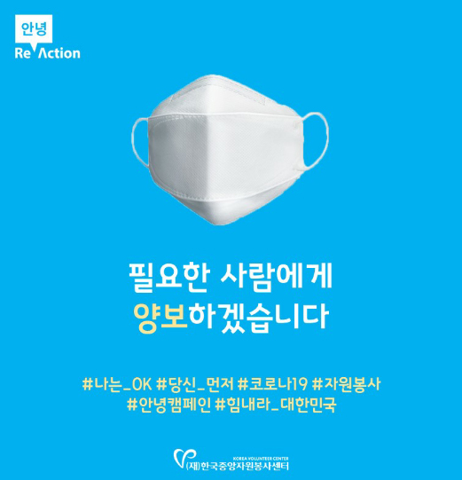

Examples of Activities
by Major Korean Private Support Foundations
by Major Korean Private Support Foundations
#1. Supporting community restoration in Daegu and North Gyeongsang Province
Support from the private and public sectors continue to restore Daegu and North Gyeongsang Province, the area hit hardest by COVID-19. Since the collective outbreak in the area, the number of new cases has finally dropped to less than 30 a day over 50 days (on Apr. 10). Daegu also recorded zero new cases, but that does not preclude tasks to be addressed after the COVID-19 pandemic. What follows are some examples of the efforts made by private support foundations toward community restoration in Daegu and North Gyeongsang Province amid the crisis.
Private donations for COVID-19 in Korea (as of Apr. 8, 2020)
○ Funds raised: KRW 238,656,410,000 (USD 193,322,325)
○ Funds executed: KRW 138,346,230,000 (USD 112,066,610)
○ Funds executed: KRW 138,346,230,000 (USD 112,066,610)
Korean Red Cross
* Korean Red Cross: a special corporation established to accomplish humanitarian missions resolved by the Red Cross Convention and the International Conference of Red Cross and Red Crescent
○ Funds raised: KRW 63,249,001,000 (USD 51,234,509; as of Apr. 13, 2020)
☞ On Feb. 27, it started “Special Fundraising to Prevent National Spread of COVID-19.”
☞ On Feb. 27, it started “Special Fundraising to Prevent National Spread of COVID-19.”
○ Funds executed: KRW 48,504,919,000 (USD 39,291,145)
- All monetary donations are spent to purchase goods, which are delivered to the field.
- The amounts raised and executed, target groups for the support, and the list of contributors were disclosed.
- All monetary donations are spent to purchase goods, which are delivered to the field.
- The amounts raised and executed, target groups for the support, and the list of contributors were disclosed.
○ Cases
Lim Hyung-joo (operatic pop tenor) released his ninth digital single, entitled, “A Song for You” and donated the proceeds from the album. Korean Red Cross made it a campaign song to give hope to people in the midst of COVID-19
Lim Hyung-joo (operatic pop tenor) released his ninth digital single, entitled, “A Song for You” and donated the proceeds from the album. Korean Red Cross made it a campaign song to give hope to people in the midst of COVID-19
Hope Bridge Korea Disaster Relief Association
* Hope Bridge Korea Disaster Relief Association: a private relief organization aiming to provide disaster relief measures and victim relief
○ Funds raised: KRW 93,266,377,276 (USD 75,549,921; as of Apr. 13, 2020)
☞ On Jan. 31, 2020, it started “COVID-19 Fundraising.”
☞ On Jan. 31, 2020, it started “COVID-19 Fundraising.”
○ Executed: about 3,870,500 items
- All monetary donations are spent to purchase goods, which are then delivered to the field. (e.g. disaster relief sets, relief supplies)
- The amounts raised and executed, target groups for the support, and the list of contributors were disclosed.
- All monetary donations are spent to purchase goods, which are then delivered to the field. (e.g. disaster relief sets, relief supplies)
- The amounts raised and executed, target groups for the support, and the list of contributors were disclosed.
Babonanum (as of Apr. 13, 2020)
* Babonanum : This foundation carries on the spirit of love and sharing demonstrated by the late Cardinal Stephen Kim Sou-hwan. It is one of two organizations receiving statutory donations.
○ Total funds raised: KRW 985,629,202 (USD 798,404)
○ Total funds distributed: KRW 985,629,202 (USD 798,404)
○ Fundraising cases
[Together with Kakao] “COVID-19 - the vulnerable feel anxious every day.”
☞ KRW 328,014,800 or USD 265,707 (Special contribution by Kakao: KRW 100,000,000 or USD 81,004 plus direct donations from 10,463 citizens)
☞ https://together.kakao.com/fundraisings/73352
[Together with Kakao] “COVID-19 - the vulnerable feel anxious every day.”
☞ KRW 328,014,800 or USD 265,707 (Special contribution by Kakao: KRW 100,000,000 or USD 81,004 plus direct donations from 10,463 citizens)
☞ https://together.kakao.com/fundraisings/73352
○ Distribution cases
Emergency support for local communities in *Daegu and Cheongdo, two of the regions in crisis
The Cheongdo County Disaster Support Council for Social Services was organized to provide emergency assistance for 675 people in 10 organizations.
Emergency support for local communities in *Daegu and Cheongdo, two of the regions in crisis
The Cheongdo County Disaster Support Council for Social Services was organized to provide emergency assistance for 675 people in 10 organizations.
* Daegu and Cheongdo: The regions home to Shincheonji Church of Jesus and Cheongdo Daenam Hospital, the places that served as hotbeds for the spread of COVID-19 in Korea.
The Beautiful Foundation
* The Beautiful Foundation: a non-profit organization led by the voluntary participation of citizens in sharing, aiming to create “small changes that change the world”
○ Total funds raised: KRW 552,892,574 (USD 447,868)
☞ The Beautiful Foundation’s COVID-19 emergency fundraising was initiated by the famous actress Lee Si-young. The special initiative raised approx. KRW 500 million or approx. USD 405,000 from the public.
☞ The Beautiful Foundation’s COVID-19 emergency fundraising was initiated by the famous actress Lee Si-young. The special initiative raised approx. KRW 500 million or approx. USD 405,000 from the public.
○ Total funds distributed: KRW 561,957,220 (USD 455,210)
○ Support cases
- The emergency fundraising resulted in approx. KRW 500 million or approx. USD 405,000, all of which was spent on COVID-19 emergency support.
Support was provided for those hit hardest, especially entrepreneurial single mothers and vulnerable social groups (e.g. the elderly at home, those with disabilities, children in low-income families, immigrants) in Daegu and North Gyeongsang Province.
- In particular, after the first program targeted entrepreneurial single mothers in the region, another program was offered nationwide, providing money to cover emergency living expenses and rent (emergency living expenses: KRW 210.2 million or USD 170,271).
- In addition to providing daily necessities and preventive/protective supplies, the foundation went proactive, providing support for living expenses.
- In collaboration with field organizations, it designed and implemented a project enhancing access to COVID-19 information by the information deprived, including those with developmental disabilities.
- Another project included providing health supplies and snacks to activists in non-profit organizations to appreciation for their staying at the forefront of this social disaster situation.
- The emergency fundraising resulted in approx. KRW 500 million or approx. USD 405,000, all of which was spent on COVID-19 emergency support.
Support was provided for those hit hardest, especially entrepreneurial single mothers and vulnerable social groups (e.g. the elderly at home, those with disabilities, children in low-income families, immigrants) in Daegu and North Gyeongsang Province.
- In particular, after the first program targeted entrepreneurial single mothers in the region, another program was offered nationwide, providing money to cover emergency living expenses and rent (emergency living expenses: KRW 210.2 million or USD 170,271).
- In addition to providing daily necessities and preventive/protective supplies, the foundation went proactive, providing support for living expenses.
- In collaboration with field organizations, it designed and implemented a project enhancing access to COVID-19 information by the information deprived, including those with developmental disabilities.
- Another project included providing health supplies and snacks to activists in non-profit organizations to appreciation for their staying at the forefront of this social disaster situation.
The Beautiful Foundation delivered health supplies and snacks to NGOs and their activists working hard in the field as a thank-you.
Korea Foundation for Women – Women helping women
* Korea Foundation for Women: a private foundation supporting public interest activities to build a society of gender equality
○ Fundraising case 1: *100-Person Donation Relay X COVID-19
100-Person Donation Relay started in 2003 and celebrates its 18th anniversary this year. It is one of the most important campaigns conducted by the Korea Foundation for Women, and aims to build a society of gender equality and promote a culture of giving. This year, priority was given to emergency relief for women whose livelihood, childcare and fundamental human rights are threatened or women’s organizations (or activists) sustaining great damage due to COVID-19.
100-Person Donation Relay started in 2003 and celebrates its 18th anniversary this year. It is one of the most important campaigns conducted by the Korea Foundation for Women, and aims to build a society of gender equality and promote a culture of giving. This year, priority was given to emergency relief for women whose livelihood, childcare and fundamental human rights are threatened or women’s organizations (or activists) sustaining great damage due to COVID-19.
100-Person Donation Relay X COVID-19
Please be our Leaders!
Please be our Leaders!
○ In addition, fundraising was conducted to help single moms and female heads of households whose businesses are on the brink of bankruptcy due to COVID-19 in Daeg
Council of Korean Community Foundations·Daegu Citizen Center
* Daegu Citizen Center: a private non-profit organization supporting grassroots movements in the public interest
* The Council of Korean Community Foundations was established in 2017 with the goal of bringing about changes in local communities and achieving sustainable development.
* The Council of Korean Community Foundations was established in 2017 with the goal of bringing about changes in local communities and achieving sustainable development.
○ Project name: Go, Daegu and North Gyeongsang Province! Join Us, Civil Society! (participation from 32 organizations and individuals)
○ Support cases (first round)
Lunches were provided for homeless people who do not go to homeless shelters; snacks for children in care facilities; and meals and snacks for healthcare professionals volunteering in poor neighborhoods.
Lunches were provided for homeless people who do not go to homeless shelters; snacks for children in care facilities; and meals and snacks for healthcare professionals volunteering in poor neighborhoods.
Social Support and Solidarity to Overcome COVID-19
We connect those willing to help and those in need.
“Go, Daegu and North Gyeongsang Province! Join Us, Civil Society!”
Let’s overcome COVID-19 through the support and solidarity of civil societies across the nation!
We connect those willing to help and those in need.
“Go, Daegu and North Gyeongsang Province! Join Us, Civil Society!”
Let’s overcome COVID-19 through the support and solidarity of civil societies across the nation!
○ In addition, fundraising was conducted to help single moms and female heads of households whose businesses are on the brink of bankruptcy due to COVID-19 in Daeg
#2. Supporting volunteers- Korea Volunteer Center’s “Goodbye COVID-19”
In the event of disaster related to infectious disease (COVID-19), volunteers are indispensable. Korea Volunteer Center publishes newsletters called “Goodbye COVID-19” to provide guidelines and information for volunteers participating in the disaster response. They have been very well received.t
Korea Volunteer Center
* Korea Volunteer Center serves to encourage every person to volunteer and builds infrastructure.
○ Project name: Goodbye COVID-19 newsletter
○ Description:
At a time when a new civic system of preventive measures different from those implemented for SARS and MERS is called for, this organization provides COVID-19 volunteering guidelines (“untact” (no-contact) guidelines), informs people of the places in need of volunteers, and presents information about actual cases and real-life action plans. The e-mail newsletter also allows readers to share their own field situations and useful information, making it more interactive. The first newsletter was sent out in February to volunteers registered with the Korea Volunteer Center. (As of Apr. 10, seven newsletters have been released.)
At a time when a new civic system of preventive measures different from those implemented for SARS and MERS is called for, this organization provides COVID-19 volunteering guidelines (“untact” (no-contact) guidelines), informs people of the places in need of volunteers, and presents information about actual cases and real-life action plans. The e-mail newsletter also allows readers to share their own field situations and useful information, making it more interactive. The first newsletter was sent out in February to volunteers registered with the Korea Volunteer Center. (As of Apr. 10, seven newsletters have been released.)
Korea Volunteer Center’s COVID-19 Response System

I will leave it for someone who needs it.
#I_am_ok #After_you #COVID-19 #volunteer #Hello_campaign #Go_Korea
#I_am_ok #After_you #COVID-19 #volunteer #Hello_campaign #Go_Korea
#3. Support through donations from the general public via online fundraising platforms
Naver and Kakao, Korea’s top two portal services, run their own online fundraising platforms as part of their corporate social responsibilities: Happybean (Naver) and Together with Kakao (Kakao). Since the COVID-19 outbreak began, people have actively participated, donating about KRW 3.5 billion or approx. USD 2.84 million, which is the largest amount raised in emergency fundraising. Here we present the cases of Together with Kakao (Emoticon donation) and OHMYCOMPANY (funding based on social missions).
Together with Kakao
○ Project name: [Donaticons] A Word We Need Now
○ Period: Mar. 2 - Mar. 15, 2020
○ Project name: [Donaticons] A Word We Need Now
○ Period: Mar. 2 - Mar. 15, 2020
○ Project name: [Donaticons] A Word We Need Now
A Word We Need Now
○ Fundraising results
Total funds raised: KRW 4,760,521,450 or USD 3,856,234 by 990,861 people☞ Special contribution by Kakao (KRW 2,500,000,000 or USD 2,025,111) + Funds raised via Together with Kakao (KRW 2,260,521,450 or USD 1,831,123)
OHMYCOMPANY
○ Project name: Go, Daegu and North Gyeongsang Province! “Show Your Power” Funding
○ Description: OHMYCOMPANY (crowdfunding platform), in collaboration with Gyeongbuk Economic Promotion Agency and Korea Social Enterprise Promotion Agency, created a page marketing products made by local social enterprises in Daegu and North Gyeongsang Province and encouraged people to participate.
○ Status: 20 new projects created, 383 people participating, and KRW 21,823,010 or USD 17,678 raised.
○ Description: OHMYCOMPANY (crowdfunding platform), in collaboration with Gyeongbuk Economic Promotion Agency and Korea Social Enterprise Promotion Agency, created a page marketing products made by local social enterprises in Daegu and North Gyeongsang Province and encouraged people to participate.
○ Status: 20 new projects created, 383 people participating, and KRW 21,823,010 or USD 17,678 raised.
#4. Citizen developers utilizing public data
What stood out in the private sector activities related to COVID-19 is that new experts and people, who are usually considered “data subjects,” or individuals identifiable through the information processed and therefore the subject of that information, provided the government with a variety of ideas for preventive measures. In the early days of social anxiety and uncertainty, people began using public data to create and share ways to overcome the crisis in creative ways. It is also noteworthy that the public sector quickly adopted the ideas from the private sector and shared transparently what was utilized and how at regular briefings. Let’s look at some of the cases where civic developers used public data available in Korea.
COVID-19 Joint Public Data Response
○ COVID-19 Joint Public Data Response
This is a voluntary group of developers seeking to loosen restrictions on the types of public data provided by the government and public institutions, as well as fragmentation of that information as it is managed by different entities.
This is a voluntary group of developers seeking to loosen restrictions on the types of public data provided by the government and public institutions, as well as fragmentation of that information as it is managed by different entities.
○ Activities
- Public data provided by government was put in graphic form, and location information analyzed to put coordinates on places that a person visited.
- In addition, the group asked for public data to be made open and prepared COVID-19 public data guidelines and dataset formats. The government accepted this proposal and began releasing real data from 7 p.m. on Mar. 10.
- A large part of the COVID-19 related service operators are middle school and high school students.
- Online civic hacking by East Asian civic hackers #publichealth Facing the Ocean Anywhere 2020-1: Civic Hacking for Public health
- Public data provided by government was put in graphic form, and location information analyzed to put coordinates on places that a person visited.
- In addition, the group asked for public data to be made open and prepared COVID-19 public data guidelines and dataset formats. The government accepted this proposal and began releasing real data from 7 p.m. on Mar. 10.
- A large part of the COVID-19 related service operators are middle school and high school students.
- Online civic hacking by East Asian civic hackers #publichealth Facing the Ocean Anywhere 2020-1: Civic Hacking for Public health
#5. Greater sensitivity to human rights in COVID-19 support programs
“Droplet transmission,” “underlying conditions,” and “cohort quarantine” are some of the phrases used when we talk about COVID-19 and that we must know to prevent its spread. However, people may find such terms unfamiliar because they are not used much in daily life. Easier language is needed for all to understand. The Human and Communication AAC Center, an organization specializing in Augmentative and Alternative Communication (AAC), produced “Picture and Letter Boards for Communication” for the speech-impaired and distributed them to testing sites.
Also, The Beautiful Foundation released a COVID-19 Booklet for 50,000 people with disabilities (a demographic vulnerable to infection) residing in Daegu and North Gyeongsang Province in collaboration with an incorporated association named Community for the Disabled. Moreover, “Human Rights Foundation SARAM” offered support programs for human rights activists who stand by those with disabilities in Daegu and North Gyeongsang Province. What follows are activities that focused on increasing sensitivity to human rights in COVID-19 support programs.
Also, The Beautiful Foundation released a COVID-19 Booklet for 50,000 people with disabilities (a demographic vulnerable to infection) residing in Daegu and North Gyeongsang Province in collaboration with an incorporated association named Community for the Disabled. Moreover, “Human Rights Foundation SARAM” offered support programs for human rights activists who stand by those with disabilities in Daegu and North Gyeongsang Province. What follows are activities that focused on increasing sensitivity to human rights in COVID-19 support programs.
Human and Communication AAC Center
* Human and Communication AAC Center: The first institution specializing in AAC in Korea
In early March, Human and Communication AAC Center began producing “Picture and Letter Boards for Communication”. These boards are a supplementary communication tool that helps the hearing-impaired, those with developmental disabilities or brain lesion disorder, the elderly, and foreigners, all of whom may experience difficulty communicating with medical staff at testing sites. Users point to the pictures or letters to deliver their message while being tested for COVID-19. They have “O” (Yes) and “X” (No), and pictures representing symptoms, such as runny nose or fever and are provided to 124 testing sites in Gyeonggi Province in Korean, English, Chinese and Vietnamese.
Han Sun-kyung, director of the Center stated, “After learning through the media that foreigners and people with disabilities were finding it hard to get tested due to communication issues, we decided to work with our language therapists to make these picture and letter boards. […] We visited a testing site in Seoul’s Eunpyeong District to see how the testing is conducted and to demonstrate our boards and make them more effective. Feedback has included that the boards are useful not only for those with disabilities but also for those without, and that they are also used in sign language translation videos. This is all very rewarding.”
KCDC and the Ministry of Health and Welfare recognized the need for these boards. After going through a review process, they have been distributed to all COVID-19 testing sites and facilities for the disabled across the nation as well as relevant associations, including the Korea Organization for Parents of the Disabled.
Han Sun-kyung, director of the Center stated, “After learning through the media that foreigners and people with disabilities were finding it hard to get tested due to communication issues, we decided to work with our language therapists to make these picture and letter boards. […] We visited a testing site in Seoul’s Eunpyeong District to see how the testing is conducted and to demonstrate our boards and make them more effective. Feedback has included that the boards are useful not only for those with disabilities but also for those without, and that they are also used in sign language translation videos. This is all very rewarding.”
KCDC and the Ministry of Health and Welfare recognized the need for these boards. After going through a review process, they have been distributed to all COVID-19 testing sites and facilities for the disabled across the nation as well as relevant associations, including the Korea Organization for Parents of the Disabled.
Can be downloaded in Korean, English, Chinese and Vietnamese.
The Beautiful Foundation - “Simple Guidelines for COVID-19” Booklet
* The Beautiful Foundation: a non-profit organization led by the voluntary participation of the public in sharing, aiming to create “small changes that change the world”
Human Rights Foundation SARAM
○ Fundraising case: “Please support human rights activists standing by those with disabilities.” (until Mar. 21, 2020)
☞ Emergency fundraising for human rights activists working with people with disabilities in Daegu and North Gyeongsang Province, where the highest number of confirmed cases and fatalities have occurred due to the spread of COVID-19
○ Objective: Cover the expenses of emergency activities (e.g. meals, transportation, medical expenses) for these activists in Daegu and North Gyeongsang Province
☞ Emergency fundraising for human rights activists working with people with disabilities in Daegu and North Gyeongsang Province, where the highest number of confirmed cases and fatalities have occurred due to the spread of COVID-19
○ Objective: Cover the expenses of emergency activities (e.g. meals, transportation, medical expenses) for these activists in Daegu and North Gyeongsang Province
Please support human rights activists standing by those with disabilities.
#6. Voluntary fundraising by the general public
As the number of confirmed cases surged, fundraising campaigns initiated by the public continued. Seoul NPO Center opened a website that archives such voluntary activities so they are not forgotten. Fundraising campaigns for young people are also actively organized.
Suddenly Tteokbokki* Is in My Account!
* Tteokbokki: A popular Korean snack made from long, white, cylinder-shaped rice cakes. The rice cakes and different vegetables are cooked together in a sauce made with red pepper paste.
○ Project name: Suddenly Tteokbokki Is in My Account!
○ Details: A project supporting young activists suffering from COVID-19
☞ A fundraising project by the youth for the youth
○ Method: Delivering donations from individual members of the public to young activists
○ Period: Two weeks from Apr. 12 (Sun) - Apr. 26 (Sun)
ss○ First pay: Apr. 19 (Sun); Second pay: Apr. 26 (Sun)
○ Funds raised: KRW 1,533,400 or USD 1,242 from 20 contributors
○ Details: A project supporting young activists suffering from COVID-19
☞ A fundraising project by the youth for the youth
○ Method: Delivering donations from individual members of the public to young activists
○ Period: Two weeks from Apr. 12 (Sun) - Apr. 26 (Sun)
ss○ First pay: Apr. 19 (Sun); Second pay: Apr. 26 (Sun)
○ Funds raised: KRW 1,533,400 or USD 1,242 from 20 contributors
“Please buy one serving of tteokbokki for young activists.
Young activists work hard to create a better society. We hope that they can also enjoy activities of daily life, such as eating tteokbokki and watching Netflix when they want. Think of it as having a coffee or a meal with a young activist. Even a small donation from fellow citizens will help young activists continue their activities.
Sharing is caring - Let's remember this feeling and meet again for other activities and other occasions for solidarity.
”
Young activists work hard to create a better society. We hope that they can also enjoy activities of daily life, such as eating tteokbokki and watching Netflix when they want. Think of it as having a coffee or a meal with a young activist. Even a small donation from fellow citizens will help young activists continue their activities.
Sharing is caring - Let's remember this feeling and meet again for other activities and other occasions for solidarity.
”
Online poster for project fundraising

international@chest.or.kr
Community Chest of Korea, All Rights Reserved
Community Chest of Korea, All Rights Reserved